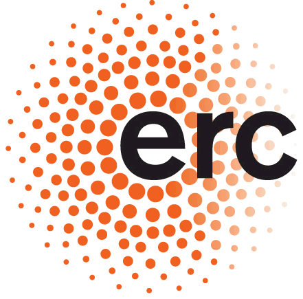

Knowledge acquisition
Build causal graphs from data and text — with LLMs helping to propose variables and causal links — and store them as versioned causal property graphs.
Teaching graph databases to ask not just “what” and “how” — but “why” and “what if”: causal interventions and counterfactual reasoning, native to the query layer. GO-Y lays the theoretical foundations of causality-driven graph data management — the causal layer that trustworthy LLMs and AI agents need.
Causal scientists draw causal DAGs and reason over them with do-calculus and ad-hoc scripts. Graph databases query connected data at scale with declarative languages like Cypher and the ISO GQL standard. Yet the two communities work in isolation.
GO-Y closes this gap. Causal graphs are no longer hand-curated files living outside the database — they become first-class, queryable, versioned data. GO-Y turns causal reasoning from a bespoke scripting exercise into a rigorous, reproducible data-management discipline.
GO-Y builds causal graph databases from the ground up — data models and query languages, causality theory, extraction, integration and temporality — and puts them to work for LLMs and AI agents in four steps toward trustworthy AI. This is a starting point: the team keeps opening new research directions as the project grows.
Build causal graphs from data and text — with LLMs helping to propose variables and causal links — and store them as versioned causal property graphs.
Give LLMs and agents the causal context of a question — causes, confounders and the paths between them — through causal graph retrieval (graph RAG), not just similar text.
Reason with that knowledge: estimate the effect of an intervention do(X) and compare what-if scenarios before an agent acts.
Explain answers and decisions through the causal paths and counterfactuals behind them, with provenance back to the data — auditable by users and regulators.
Wherever decisions must be explained, audited and trusted, systems need to reason about cause and effect — not just correlation. Two domains shape GO-Y’s agenda.
Modern AI ecosystems fragment knowledge across many models, agents and sources — and pattern matching alone cannot anticipate the consequences of an action. A causal graph database provides the missing layer: a shared, persistent, queryable causal model with auditable assumptions, counterfactual explanations and versioned provenance for automated decisions.
Safety-critical driving runs on “what if”. Causal property graphs let engineers and regulators query interventions and counterfactual scenarios over sensor, traffic and incident data — from accident causation analysis to scenario-based safety validation — with the lineage needed for certification and audit.
…and beyond: biomedicine, epidemiology, finance and public policy — wherever “why” matters as much as “what”.

The ERC Advanced Grant is the European Research Council’s most senior and most competitive individual funding scheme — awarded on scientific excellence alone, to established research leaders with a major track record, for high-risk, high-gain frontier research. With success rates well below 15%, it is among the hardest grants to win and is widely regarded as a career-defining mark of distinction.
Fully-funded PhD and postdoctoral positions in Lyon, at the meeting point of graph data management, databases and causal inference.
Lay the foundations of causal graph databases — a formal causal property graph model, causal query operators, and the integration, consistency & versioning of causal graphs.
Apply PostdocAlign causal inference with property graphs — validate, store, integrate, version and query causal graphs as they evolve over time.
ApplyHow to apply. Email Prof. Angela Bonifati a short statement of interest with your CV (and transcripts for PhD applicants). Rolling review — positions stay open until filled, so early applications are encouraged.